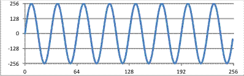
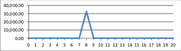

In this lab we will explore some of
the factors that influence execution time performance on the
PIC32MX. First we will need a program that takes some time to
execute so we can observe the impact of performance
enhancements. In this case we will use an "FFT" (a Fast Fourier
Transform). This is a common mathematical operation that can
convert a series of samples of the amplitude of a signal (its
time domain representation) into a frequency domain
representation. This is useful not only for visualizing the
frequency domain representation of a signal, but also for many
other functions such as digital filtering (and other DSP
functions) and it is also used for some other numeric
operations. The directory "
\\rei\pv104_public\CST
337" (note that there is a space in "CST 337") contains
a directory called "fft" that contains a public domain
floating-point implementation of an FFT by Don Cross. We will
begin by porting this code to the PIC32MX.
The Lab
Part 1
1) Start a new project (select set as main project as you do
this), and copy the contents of the fft directory to your
project directory.
2) The fft directory contains several .c and .h files related to
the project. In particular fourierf.c contains -- fft_float() --
the floating point FFT routine that we will use. (fourierd.c
contains a double-precision floating point FFT fft_double()).
FOURIER.H contains the necessary function prototypes, along with
a good description of the arguments needed for the fft_float()
routine:
void fft_float (
unsigned
NumSamples,
/* must be a power of 2 */
int
InverseTransform, /* 0=forward FFT,
1=inverse FFT */
float
*RealIn,
/*
array of input's real samples */
float
*ImaginaryIn,
/* array of input's imag samples */
float
*RealOut,
/*
array of output's reals */
float *ImaginaryOut
); /* array of output's
imaginaries */
Note that the number of samples handled by this FFT routine must
be a power of 2. The NumSamples input tells the fft_float()
routine how many samples it must process and hence the size of
the input and output data arrays. For our purposes, we will be
using a forward FFT (which transforms a time domain signal into
the frequency domain) so we will be using 0 as the second
argument. The "In" arrays provide for the input while the "Out"
arrays will carry the output. Note that both of these arrays are
pairs resulting from the fact that FFTs use complex numbers. Our
input data will be real values only. A way to handle this
without the need to provide an imaginary input array (of all 0
values) is simply to pass a null pointer for the ImaginaryIn
array. As noted in the header file, the fft_float() routine will
recognize this as a flag that indicates the input is real. We
will, however, need arrays for both the real and imaginary
outputs.
3) Add the fourierf.c source, the fftmisc.c source and a new
(suitably named) main routine source file to your project. Add
the necessary include files to your main source file and some
#defines:
#define M_PI 3.14159265358979323846
#define NSAMP 256
#define TPIN (2 * M_PI/NSAMP)
We will use NSAMP for the number of samples to process (note
that it must be a power of 2) and TPIN (two pi over NSAMP) will
be used to generate sinusoidal inputs for the FFT. Note that
M_PI has the value of PI and is defined in the math library.
Also, because we will be using sin and other math library
functions, we will need to include <math.h>.
4) Globally declare the one input (which will be a sine wave)
and two output arrays (one for the real and one for the
imaginary output). They need to be global for the DMCI tool that
we will use later (otherwise they could be local). Add code to
initialize the real input array to the following function:
in[n] = 200 * sin(f * 2 * pi
/NSAMP * n) where f is the normalized frequency of the
sin wave and 200 will be its peak amplitude. By normalized
frequency we mean that there will be
f cycles of the sin wave in the input
array. To see this, note how the argument to the sin function
will go from 0 to 2*pi
f
times as n goes from 0 to NSAMP. (The actual frequency of the
input would depend on our sampling frequency, and since we
didn't actually sample it, it is somewhat arbitrary.) You can
chose the value of
f that
you want from integer values between 2 and 8). Next add the code
to call the fft_float() routine. Finally, we will process the
two output arrays to get the magnitude of the FFT output. This
is provided by the formula mag[n] = sqrt(Real[n]^2 + Imag[n]^2).
As you may recall, imaginary numbers provide both magnitude and
phase information. The magnitude is what we are primarily
interested in. Rather than define a magnitude array we can
overwrite one of the output arrays (if you do define a magnitude
array, make it globally defined).
5) You will need to modify fft_float() as it was defined to run
on a general purpose machine and contains some fprints() calls
to report errors. Note that the PIC32MX libraries do provide
some support for using printf and scanf on the UART2 interface.
Also, the PIC32MX starter kit supports using some I/O functions
that allow output from a program to appear in a window in MPLAB
and for input to be supplied back to the PIC32 when it is
running standalone being debugged through the USB debug cable.
Similarly, Real ICE and the 5xx/6xx/7xx members of the PIC32
family can support this feature but not the 3xx. Since our
configurations don't support either of these approaches, the
fprintf() calls will have to be removed (commented out). Select
the simulator as the debugger, and build your project. Fix any
issues until the code builds properly. Keep a record of any
changes you had to make to any of the fft files you are porting
for your report.
6) You will need to add some heap space as apparently some of
the math library or floating point routines requires it. This
can be done in Project Properties under the xc32-ld category.
Allocate 512 bytes for the heap.
Skip step 7. The DMCI
plugin doesn't currently display floating point arrays
correctly. Instead
do
step 7a and export the data to csv files which excel can
graph.
7) To make sure the code is functioning properly, we will have
to be able to observe the input array and the results in the
output array. One way to do this could be to use the Watch
window to export the input array and the magnitude output array
to files (after running the code) and then to use an external
graphing program (i.e. Excel) to visualize them. However, MPLAB
also provides a tool that can present the contents of arrays
visually. This is the DMCI or "Data Monitor and Control
Interface".
Select Tools > Embedded >
DMCI > DMCI Window, then Dynamic Data View. Rebuild your
project, and then re-open the DMCI window. Select the
appropriate project in the DMCI window. Now, you can right
click on a graph window and choose the Configure Data Source
option. Then select the input array from the global symbols
list and finally, click OK. Now run the code. After running
the code (a breakpoint at the end of main helps to know when
you are done), you should be able to see a sin wave with
between 2 to 8 full cycles in the graph (according to your
choice of f) and
an amplitude of 200.
Repeat the above steps in another graph in order to see the
output magnitude (You only need to set the sample count to 128
since the FFT output in the last 128 elements will be a mirror
image of the first 128.)
Show these results to the professor.
7a) From the Variables window export to CSV the input and final
magnitude output arrays. Make sure they are first set to display
the value column as IEEE float. Right click on the array name
and choose export data to CSV. Then, chose "Displayed Format".
Then open the csv file using excel and graph the data. On the
magnitude output, you only need to graph half the array (so 128
data points of the 256), as the data is mirrored. Graphing less
will likely let you see more clearly what is going on. Show the
graphs to your professor. Change f in the input array
calculation and see what changes. Following is a graph of the
input and the magnitude output for f = 8.


Notice how there are 8 complete cycles in the input window and
how the magnitude output has a peak at 8. Show your results to
the professor in order to ensure your code is functioning
correctly.
8) Now we will add the ability to time the execution of the fft
routine and rebuild it for the actual hardware using the Real
ICE debugger. We will probably need a 32 bit timer (I hope that
is big enough) so we can't use Real ICE's built in stopwatch. We
can, however, use Timers 2 and 3 configured as a 32 bit timer.
To do this, we need to set the T32 bit in T2CON. Once this bit
is set and the Timer is running (T2CON.ON is set), we can read
and write 32 bit values from the TMR2 and PR2 ports. Add code to
initialize Timer2 (and 3 together) by setting up T2CON. Set the
timer2 prescale for 1:1 and also set the system clock for 72MHz
using the pragmas (introduced in the last lab), but this time
set the
Peripheral Bus
clock to also run at 72MHz.
9) We will use this opportunity to introduce the functions and
macros in the PIC32MX Peripheral Library. To use these functions
you will have to add #include <plib.h> to your code. The
functions and macros are described in MPLAB under Help > Help
Contents > Language Tools > XC32 Toolchain > XC32
Peripheral Libraries. This really just only gives a listing of
the functions and macros that are in the library and a
rudimentary listing of the arguments. It doesn't provide a
description of how the function or macro operates and any of its
side effects. One useful thing this help file provides is a
listing of which routines are functions and which are macros. A
better description of the functions and macros can be found in
the 32-bit-Peripheral-Library-Guide.pdf file which is in the
class reference material on the class web page). Ultimately the
best source is the library source itself (in include files for
macros at eg. C:\Program
Files\Microchip\xc32\v1.32\pic32-libs\include\peripheral\timer.h
and in source files at eg. C:\Program
Files\Microchip\peripheral\(appropriate peripheral)\source).
10) Check out each of the above references looking for the
OpenTimer23 macro so you can see what information each resource
provides. Be careful not to make any changes to the timer.h
file.
11) So, we could configure and use timer 23 by placing
OpenTimer23(T2_ON | T2_SOURCE_INT | T2_PS_1_1,
0)
WriteTimer23(0) //
initialize the timer to 0
immediately beofre the fft_float() routine call, and then
time = ReadTimer23()
immediately after it.
Alternately you can setup the 32 bit timer using your own code
(use the timer 2 setup code you used in the last lab, adding in
setting the T2CON.T32 bit). Once T2 is put in 32 bit mode, 32
bit values can be read from and written to TMR2 and PR2.
First, a word about using peripheral library routines. Always
make sure you know what the routine does and what side effects
it might have. Also be very aware of whether the routine is a
macro or a function, especially when using them in interrupt
service routines.
Calling an
actual function within a service routine adds a lot of
overhead to the routine by itself, and also forces the service
routine to save and restore all registers since it cannot be
sure what registers the called routine (or any routines it
might call) uses! Also, you will note that many of
these routines make use of parameters defined in include files
that are not error checked so it would be easy to use, say a
timer1 parameter (say T1_PS_1_8) where timer 2 parameter (say
T2_PS_1_8) was actually needed which could lead to undesired
results.
Answer the following questions for your report: What advantages
do the above macros provide over using the T2CON, TMR2 and PR2
ports directly? What disadvantages are there?
12) Build, debug and run your code using the target board
hardware.
Make sure you
are only timing the execution of the fft_float() routine.
Record the timer23 output, and its equivalent value in seconds
for your report. Make sure the value makes sense by checking it
against your observation of how long the code takes to reach a
breakpoint set after the timer23 read. Please record the cycle
count
in decimal for
your report. Note that you can set the properties of the "time"
variable in the watch window so it is reported in decimal rather
than hex. Also convert this to seconds.
Lab Part 2
Now we will make some changes to the PIC32MX configuration and
record the improvements in execution time that they produce
13)
Flash Wait States
By default, the PIC32MX is configured to operate with 7 (the
maximum number) of wait states for accessing the flash memory.
This reset default provides a safe default for current and
future PIC32MX family members, but will mean that the
instructions are fetched more slowly than they might otherwise
be on our processor. Remembering that we are running at 72MHz
and that the flash access time is
33 1/3ns
(30MHz). This means that 2.4 system clock cycles are needed to
access Flash. Since the processor always allocates one cycle for
the load instruction, we will have to add 2 wait states. This
can be done using the CHECON (Cache Control) register and
setting its PFMWS (prefetch module wait states) to 2.
CHECONbits.PFMWS=2
One might be tempted to use the macro:
SYSTEMConfigWaitStatesAndPB(freq)
which will compute the number of wait states needed given the
passed frequency parameter which in our case would be
72000000L (note the L),
but it also configures
the Peripheral bus divider for its maximum clock rate -- it
seems early PIC32s couldn't run the peripheral bus past 50MHz
and so this macro was put in the library. In current versions of
the library, it sets the Peripheral Bus clock divider for 1 to 1
since the peripheral bus can operate at 80MHz. However, this
might represent a side effect if you were setting the PB divider
to something other than 1 to 1 in your #pragmas and then ran
this macro. A macro in the current library that only sets the
wait states is
SYSTEMConfigWaitStates(freq).
Make sure your code still functions correctly (check the Input
and Output arrays), and record the resulting execution time in
cycles and in seconds for your report.
14)
Instruction Cache
Turn on the Instruction Cache using the
CheKseg0CacheOn()
macro. Leave the Wait States set to 2. Make sure your code still
functions correctly (check the Input and Output arrays), and
record the resulting execution time in cycles and in seconds.
Note that the Instruction Cache is rather small (it can hold at
most 64 32-bit instructions).
15)
Enabling PreFetch
The cache module can also pre-fetch instructions. When an
instruction is fetched and it misses in the cache, that
instruction (and its 4 neighbors) are fetched and brought into
the cache. When instruction pre-fetch is enabled, the next 4
instructions are also brought into the prefetch unit. If the
code that was brought into the cache does not branch, the next
instructions will be available in the Prefetch unit with no wait
states. Prefetch can be turned on with the macro
mCheConfigure(CHECON | 0x30)
Make sure your code still functions correctly (check that the
Input and Output arrays still have the same data), and record
the resulting execution time in cycles and in seconds for your
report. Also determine how this macro could be replaced with a
CHECONbits statement like that in part 13. Use this in your code
or put it in your report.
16) An alternative to the above 3 steps (which could themselves
be simplified) is
SYSTEMConfig(72000000L,
SYS_CFG_WAIT_STATES | SYS_CFG_PCACHE). (Note that
without the SYS_CFG_PB_BUS flag, SYSTEMConfig won't change the
peripheral bus clock divider settings.) Change your code to use
the SYSTEMConfig macro. Make sure your code still functions
correctly (check the Input and Output arrays), and record the
resulting execution time in cycles and in seconds. If the
execution time does not match that you obtained in part 15, try
to determine what SYSTEMConfig did differently than the settings
it replaced.
Note: avoid using the SYSTEMConfigPerformance macro which, like
SYSTEMConfigWaitStatesAndPB, also has the side effect of setting
the PB clock divider to 1:1.
Have the professor check
your timing results.
REPORT
A formal report is not required. Include:
- A copy of your commented main routine (I don't need copies
of any of the fft files).
- The list of changes you made to the fft files (part 5).
- Your answer to the questions in part 11.
- How to enable Prefetch with a CHECONbits statement (part15).
- The execution times in cycles and seconds obtained in
parts 12 through 16 in a table like the following:
Configuration
|
Time in Cycles
(decimal please)
|
Time in Seconds
|
Default Configuration
(part 12)
|
|
|
Wait States at 2
(part13)
|
|
|
Wait States at 2
Instruction Cache on (part 14)
|
|
|
Wait States at 2
Instruction Cache on
PreFetch Enabled (part 15)
|
|
|
SYSTEMConfig (part
16)
|
|
|
- Differences in what SYSTEMConfig does and the earlier 3
settings (if any) (part 16).
- Your assessment as to how effective each of the 3
performance settings in steps 12 through 15 were.